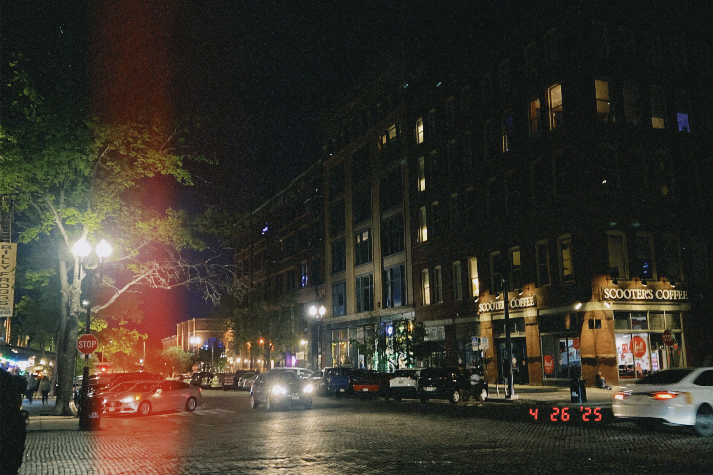

As a student studying at the University of Nebraska at Omaha, Anh is excited to share her work for Activity 2. In her pursuit of a degree in Management Information Systems, she is working daily to improve and hone her technical and analytical skills.
In her free time, she can be found scouting the city for new adventures. Despite having been raised in Omaha, one of Anh's favorite things to do is explore her city, which seems to change every day. Pictured above is a photograph she took of Omaha's Old Market in the Downtown area.
Have a wonderful day!